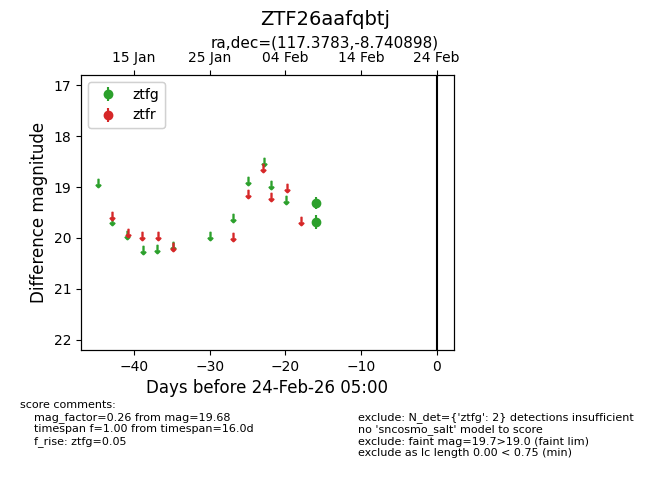
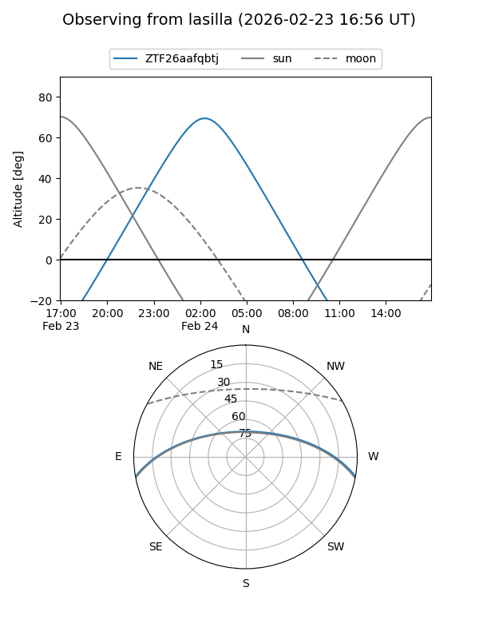
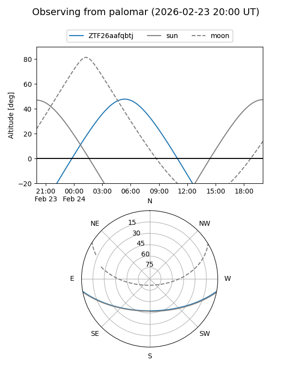

ZTF26aafqbtj
Target ZTF26aafqbtj at 2026-02-24 09:08
Aliases and brokers:
FINK: link
Lasair: link
ALeRCE: link
alt names
ZTF26aafqbtj (ztf,fink_ztf)
Coordinates:
equatorial (ra, dec) = 117.3783,-8.74090
equatorial (HMS+DMS) = 07:49:30.78,-08:44:27.23
galactic (l, b) = (227.4759,+8.69833)
Flags:
Photometry:
last ztfg=19.68
2 ztfg detections
Lightcurve

Visibility


Additional plots